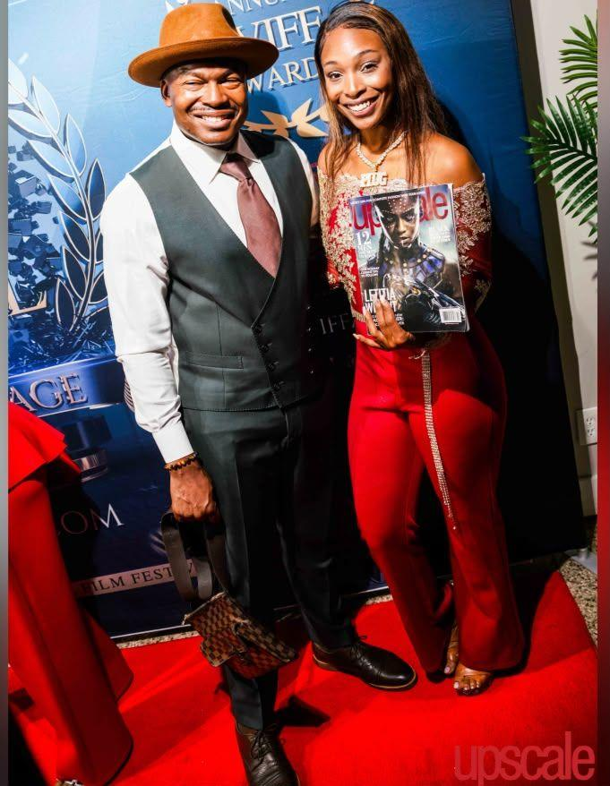
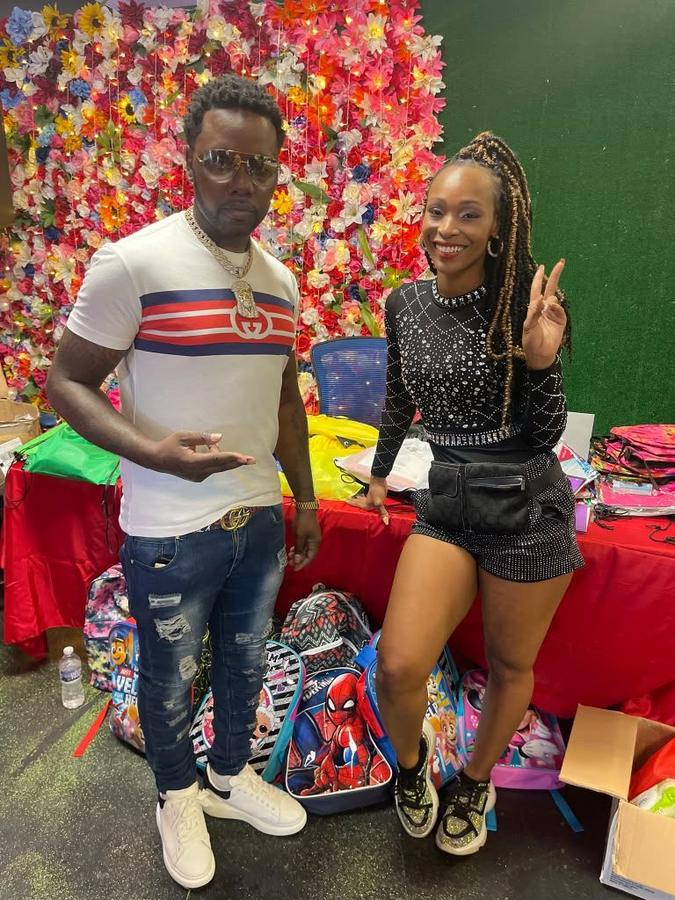

Services for brands that mean business.
Taylor Success Enterprise is a full-service media, branding and public relations agency in Atlanta, Georgia. Lean, loud and personal: the reach of a major firm with the attention of a boutique.
Public relations & media
Your story, told by the right people in the right places. I write it, pitch it and place it.
- Press write-ups and media releases
- Media pitching, blog and press placements across 280+ outlets
- Red carpet coverage and interviews
- Radio and podcast appearances
Best for: Artists, founders, brands and events with something worth talking about.

Event production
Concept to curtain call. 45+ events produced in Atlanta and 220+ coordinated nationwide, from World Cup events to community giveaways.
- Event planning and coordination
- Vendor, talent and sponsor coordination
- Street team marketing and billboards
- On-site production and management
Best for: Brands, organizations and communities that want people to show up and remember it.

Branding & marketing
A name is not a brand until people remember it. I connect your identity, message and marketing into one story.
- Marketing campaigns
- Social media growth and campaigns
- EPK (electronic press kit) development
- Messaging and positioning
Best for: Founders, creatives and businesses ready to be recognized.

Sponsorships & partnerships
The right brands in the right rooms, with deals that work for everybody at the table.
- Endorsements and partnerships
- Sponsor outreach and packages
- Brand activations at events
- Matching brands with aligned audiences
Best for: Events and brands looking for funding, reach or credibility.

Talent & entertainment relations
Support for artists, public figures and productions across film, music, live events, concerts and tours.
- Talent liaison and coordination
- Appearances, interviews and placements
- Red carpet and press support
- Production and event support
Best for: Artists, hosts, public figures and productions.

Business development & consulting
Leadership coaching and growth strategy that connect your passion to your purpose, backed by 15+ years in business.
- Business growth planning
- Leadership coaching
- Introductions to partners, sponsors and decision makers
- Funding and partnership conversations
Best for: Entrepreneurs and organizations ready for their next chapter.
Before you book.
What does a publicist do?
A publicist shapes your story and gets it in front of the right audience: writing press materials, pitching media, securing interviews and placements, and managing how you show up before, during and after a launch or event.
Do you only work with entertainment clients?
No. Taylor Success Enterprise serves corporate, consumer and entertainment clients, from founders and small businesses to artists, organizations and events.
How do I get started?
Send an inquiry with your goal, timeline and budget range if known. Every package is tailored to the client, so the first step is a conversation about the outcome you want.
Can you help with a single event or only long-term campaigns?
Both. Some clients hire the agency for one event or launch, others for ongoing publicity, branding and partnership support.
Do you work outside Atlanta?
Yes. The agency is based in Atlanta and works nationwide and internationally.

Your next chapter deserves a loud plan.
Tell me the goal. I’ll map the plan.